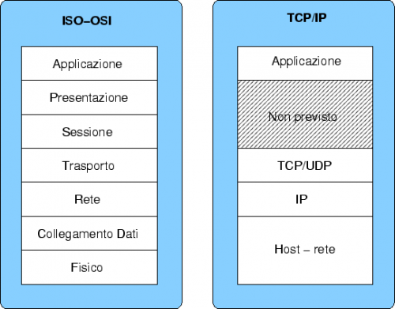

Un protocollo di rete, è un particolare tipo di protocollo di comunicazione preposto al funzionamento di una rete informatica.
Più semplicemente un protocollo si può definire come un insieme di regole che vengono stabilite per instaurare una comunicazione corretta: ad esempio due persone di differenti madrelingue potrebbero mettersi d'accordo nell'utilizzo della lingua inglese per comunicare.

l'HyperText Transfer Protocol over Secure Socket Layer, è un protocollo per la comunicazione sicura attraverso una rete di computer utilizzato su Internet.
Consiste nella comunicazione tramite il protocollo HTTP
all'interno di una connessione criptata, tramite crittografia asimmetrica, dal Transport Layer Security (TLS) fornendo come requisiti chiave:
Alla data del 3 maggio 2017, il 56,8% dei 139 032 maggiori siti web ha un'implementazione sicura del protocollo HTTPS è utilizzato dal 5,24% del totale dei domini italiani registrati.